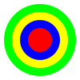

SVG (scalable vector graphic) — формат векторной графики. В отличии от растровой графики, в которой файлы хранят информацию о каждом пикселе, в векторной графике хранятся уравнения, которые задают то, что должно быть отображено.
1. Как src для тега изображения:
<img src="img.svg" />

2. Как background-image в CSS:
<div style="background-image: url(img.svg)"></div>
3. Через @import для SVG-шрифтов:
@font-face {
font-family: Font Name;
src: url('font.svg#svgFontName') format('svg');
}
4. С помощью тега object:
<object type="image/svg+xml" data="picture.svg"></object>
Все перечисленные способы работали и раньше. Стандарт HTML5 позволяет вставлять SVG-графику в собственный контейнер - тег svg:
<svg width="300px" height="300px" version="1.1" xmlns="http://www.w3.org/2000/svg">
<circle cx="150" cy="150" r="120" stroke="lime" stroke-width="30" fill="yellow" />
<circle cx="50%" cy="50%" r="20%" stroke="#0000FF" stroke-width="10%" fill="#FF0000" />
</svg>
Для вставки SVG-графики на страницу используют тег svg. Конетейнер SVG может иметь следующие параметры:
viewBox может использоваться как для обрезки изображения:
так и для масштабирования:
Тег svg не имеет визуального представления, он является лишь контейнером для других элементов.
Элементы внутри контейнера визуально располагаются друг над другом, т.е. самый последний элемент визуально перекрывает остальные (имеет "болший z-index").
Для рисования линий используют элемент line:
<line x1="50" y1="50" x2="90%" y2="90%" stroke="rgb(0,255,0)" stroke-width="3" />
Используемые атрибуты:
Большинство параметров можно задавать не в виде атрибутов, а в виде CSS. Следующая запись для линии будет равносильна предыдущей:
<line x1="50" y1="50" x2="90%" y2="90%" style="stroke:rgb(0,255,0);stroke-width:3" />
Полилинии — это последовательно нарисованные линии, у которых конец предыдущей линии является началом следующей. Для полилиний используется элемент polyline:
<polyline points="0,100 50,100 60,50 60,150 65,100 80,100 90,20 90,180 95,100 120,100" style="fill:transparent;stroke:red;stroke-width:4" />
Полилинии, как и большинство фигур векторной графики, имеют обводку и заливку. Заливка в данном случае применяется для области от первой точки полилинии до последней.
Элемент circle описывает круг, при этом необходимо задать координаты центра круга, его радиус, а так же цвета обводки и заливки:
<circle cx="150" cy="150" r="75" stroke="blue" stroke-width="8" fill="cyan" />
По умолчанию координаты центра круга - 0,0.
Для рисования эллипса используется элемент ellipse. В отличие от круга эллипс имеет два радиуса, горизонтальный и вертикальный:
<ellipse cx="150" cy="150" rx="125" ry="75" stroke="blue" stroke-width="8" fill="cyan" />
Элемент rect используется для создания прямоугольников. Точкой отсчета прямоугольника является левый верхний угол, т.к. именно эти координаты нужно указать в атрибутах. Также задают длину и высоту:
<rect x="25" y="50" width="150" height="100" stroke="blue" stroke-width="8" fill="cyan" />
Для построения многоугольников, не являющихся прямоугольниками, в SVG есть элемент polygon ("poly"-много, "gon"-угол). В атрибуте points указываются координаты всех точек многоугольника, при этом контур закрывается автоматически:
<polygon points="100,25 150,200 50,200" stroke="brown" stroke-width="8" fill="lime" />
<polygon points="100,25 300,25 250,150 50,150" stroke="slateblue" stroke-width="8" fill="coral" />
<polygon points="100,25 200,100 150,200 50,200 0,100" stroke="cadetblue" stroke-width="8" fill="burlywood" />
Для построения фигур произвольной сложности используется элемент path. Его атрибут d содержит инструкции движения и рисования для виртуального пера в специальном формате. Каждая инструкция закодирована буквой и принимает одну или несколько координат. Список инструкций:
Например, треугольник можно описать не тремя точками, а четырьмя инструкциями:
<path d="M100 25 L150 200 H50 Z" stroke="brown" stroke-width="8" fill="lime" />
Использование букв в нижнем регистре для линий позволяет указать относительные, а не абсолютные координаты:
<path d="M100 25 l50 175 h-100 Z" stroke="brown" stroke-width="8" fill="lime" />
Более сложные фигуры используют другие элементы path:
<path d="M100 25 C100 25, 250 100, 100 200 Z" stroke="cadetblue" stroke-width="8" fill="burlywood" />
Кривая Безье имеет координаты трех точек: двух опорных и точки окончания кривой.
Для скругленных линий можно использовать элиптические дуги. При этом набор координат для этих дуг более сложный - горизонтальный радиус, вертикальный радиус, поворот по оси X, флаг "большой дуги", флаг скрытия,координата X конца дуги, координата Y конца дуги:
<path d="M100 25 A 200 100 0 0 1 100 200 Z" stroke="cadetblue" stroke-width="8" fill="burlywood" />
Элемент text может не принимать никаких параметров:
<text>queue, fill, svg</text>
Опорной точкой элемента text является левый нижний угол, потому чтобы что-то увидеть, нужно задать координаты отображения:
<text x="50" y="50" fill="blue" style="font-size: 24px;" font-family="monospace">Hello, SVG!</text>
Атрибут text-anchor позволяет указать "выравнивание" строки относительно ее горизонтальной координаты:
<text x="50" y="50" fill="red" text-anchor="middle" style="font-size: 30px;">Hello, SVG!</text>
Атрибут textLength позволяет указать ширину строки и буквы внутри строки будут соответствующим образом выравниваться:
<text x="50" y="50" fill="forestgreen" textLength="120" font-size="30">Hello, SVG!</text>
Длинный текст может быть разбит на группы с помощью tspan. Для каждой группы можно задать свое форматирование:
<text x="50" y="50" fill="#008" font-size="30">
<tspan fill="#33F">Hello,</tspan>
<tspan x="50" y="100">SVG!</tspan>
</text>
SVG позволяет создавать градиенты, которые могут использоваться в качестве заливки как обычные цвета. Как и в CSS, в SVG есть два типа градиента: линейный и радиальный. Описание градиента создается с помощью linearGradient, объявляемом в специальном блоке defs, а потом может использоваться любым элементом, ссылающимся на id градиента. К определенному таким способом градиенту может получить любой svg-контейнер на странице. Это похоже на определение стилей в CSS.
<defs>
<linearGradient id="grad" x1="0%" y1="0%" x2="100%" y2="100%">
<stop offset="0%" style="stop-color:red;stop-opacity:1" />
<stop offset="100%" style="stop-color:yellow;stop-opacity:1" />
</linearGradient>
</defs>
<rect x="10%" y="10%" width="80%" height="80%" stroke="none" stroke-width="8" fill="url(#grad)" />
Направление градиента регулируется координатами, указанными в градиенте, точек фиксации цвета может быть несколько:
<defs>
<linearGradient id="grad-2" x1="0%" y1="0%" x2="0" y2="100%">
<stop offset="0%" style="stop-color:green;stop-opacity:1" />
<stop offset="50%" style="stop-color:yellow;stop-opacity:1" />
<stop offset="100%" style="stop-color:red;stop-opacity:1" />
</linearGradient>
</defs>
<rect x="10%" y="10%" width="80%" height="80%" stroke="none" stroke-width="8" fill="url(#grad-2)" />
Радиальный градиент описывается элементом radialGradient, в атрибутах указывается центр градиента и его радиусы:
<defs>
<radialGradient id="grad-3" cx="50%" cy="50%" r="50%" fx="50%" fy="50%">
<stop offset="0%" style="stop-color:green;stop-opacity:1" />
<stop offset="100%" style="stop-color:red;stop-opacity:1" />
</radialGradient>
</defs>
<rect x="0" y="0" width="100%" height="100%" stroke="none" stroke-width="8" fill="url(#grad-3)" />
<defs>
<radialGradient id="grad-4" cx="0" cy="0" r="100%" fx="30%" fy="50%">
<stop offset="0%" style="stop-color:crimson;stop-opacity:1" />
<stop offset="100%" style="stop-color:cyan;stop-opacity:1" />
</radialGradient>
</defs>
<rect x="0" y="0" width="100%" height="100%" stroke="none" stroke-width="8" fill="url(#grad-3)" />
Для стилизации обводки можно использовать следующие атрибуты:
Атрибут stroke-linecap принимает одно из трех значений: square (по умолчанию) - квадратный край, включает координаты первой и последней точек, round - скругленный край, включает координаты первой и последней точек, butt - скругленный край, исключает координаты первой и последней точек.
<line x1="50" y1="125" x2="90%" y2="125" stroke="rgb(255,0,0)" stroke-width="20" stroke-linecap="square" />
<line x1="50" y1="150" x2="90%" y2="150" stroke="rgb(0,255,0)" stroke-width="20" stroke-linecap="round" />
<line x1="50" y1="175" x2="90%" y2="175" stroke="rgb(0,0,255)" stroke-width="20" stroke-linecap="butt" />
Атрибут stroke-dasharray принимает одно из трех значений: miter (по умолчанию) - пересечение под углом, round - пересечение под скругленным углом, bevel - пересечение по срезанным углом:
<polyline points="125 60 150 20 175 60" stroke="red" stroke-width="20" fill="none" stroke-linejoin="miter" />
<polyline points="125 140 150 100 175 140" stroke="green" stroke-width="20" fill="none" stroke-linejoin="round" />
<polyline points="125 220 150 180 175 220" stroke="blue" stroke-width="20" fill="none" stroke-linejoin="bevel" />
Атрибут stroke-dasharray принимает последовательность чередующихся длин штрихов и пропусков:
<line x1="50" y1="125" x2="90%" y2="125" stroke="rgb(255,0,0)" stroke-width="5" stroke-dasharray="20 5" />
<line x1="10%" y1="150" x2="90%" y2="150" stroke="rgb(0,255,0)" stroke-width="5" stroke-dasharray="10 20" />
<line x1="10%" y1="175" x2="90%" y2="175" stroke="rgb(0,0,255)" stroke-width="5" stroke-dasharray="20 10 5 10" />
Любой видимый элемент, обернув его ссылкой, можно сделать кликабельным:
<svg width="400px" height="150px" version="1.1" xmlns="http://www.w3.org/2000/svg" xmlns:xlink="http://www.w3.org/1999/xlink">
<a xlink:href="https://br3t.github.io/fstk/" target="_blank">
<text x="50" y="50" fill="#008" font-size="30">
Mainpage
</text>
</a>
</svg>
<image xlink:href="img.svg" x="10%" y="10%" width="80%" height="80%" />
Canvas определяет холст для скриптовой генерации графики на странице.
Перед началом рисования необходимо создать элемент холста и получить контекст. Также при создании холста следует указать его размеры, иначе будут использоваться размеры по умолчанию 300х150px.
<canvas id="c" width="400" height="300" style="border:1px solid #f00"></canvas>
<script>
var canvas = document.getElementById('c');
var ctx = canvas.getContext('2D');
</script>
Рисование линии состоит из последовательного запуска методов полученного объекта контекста:
ctx.beginPath();
ctx.moveTo(50, 50);
ctx.lineTo(350, 250);
ctx.stroke();
Обычная линия является частным случаем полилинии. Т.е. чтобы нарисовать полилинию достаточно вызвать lineTo необходимое число раз:
ctx.beginPath();
ctx.moveTo(50, 50);
ctx.lineTo(50, 100);
ctx.lineTo(100, 100);
ctx.lineTo(100, 150);
ctx.stroke();
Перемещая перо с помощью moveTo можно рисовать прерывистую полилинию:
ctx.beginPath();
ctx.moveTo(50, 50);
ctx.lineTo(50, 70);
ctx.moveTo(50, 80);
ctx.lineTo(50, 100);
ctx.moveTo(50, 110);
ctx.lineTo(50, 130);
ctx.stroke();
Если необходимо изменить цвет пера или его толщину, то не обходимо указать нужные параметры до рисования линии. Например, для линии нужно указать strokeStyle в любом месте до вызова метода stroke, чтобы поменять ее цвет:
ctx.beginPath();
ctx.moveTo(50, 50);
ctx.lineTo(350, 250);
ctx.strokeStyle = '#ff0000';
ctx.stroke();
Изменение толщины линии происходит при присвоении свойству lineWidth нового значения в пикселях:
ctx.beginPath();
ctx.moveTo(50, 50);
ctx.lineTo(350, 250);
ctx.lineWidth = 16;
ctx.stroke();
Свойство lineCap аналогично одноименному свойству в SVG и определяет стиль концов линии: butt для концов без скругления исключая конечные точки, round для концов со скруглением включая конечные точки и square для концов без скругления включая конечные точки:
ctx.lineWidth = 16;
// line 1
ctx.lineCap = "butt";
ctx.beginPath();
ctx.moveTo(50, 50);
ctx.lineTo(350, 50);
ctx.stroke();
// line 2
ctx.lineCap = "round";
ctx.beginPath();
ctx.moveTo(50, 100);
ctx.lineTo(350, 100);
ctx.stroke();
// line 3
ctx.lineCap = "square";
ctx.beginPath();
ctx.moveTo(50, 150);
ctx.lineTo(350, 150);
ctx.stroke();
Пунктирная линия создается с помощью метода setLineDash, который в качестве параметра принимает массив чередующихся длин штрихов и пропусков. Свойство lineDashOffset указывает на отступ штриха от стартовой позиции:
ctx.lineWidth = 5;
ctx.setLineDash([2,8,32,8]);
ctx.lineDashOffset = 20;
ctx.beginPath();
ctx.moveTo(50, 50);
ctx.lineTo(350, 250);
ctx.stroke();
Использование метода closePath позволяет замкнуть полилинию, получив из нее полигональную фигуру.
Для создания прямоугольника используется метод rect, который принимает координаты начальной и конечной точек (левого верхнего и правого нижнего угла прямоугольника):
ctx.rect(10, 10, 350, 250);
ctx.fill();
С помощью отдельных методов strokeRect и fillRect можно либо обвести, либо залить прямоугольную область:
ctx.strokeRect(10, 10, 350, 250);
ctx.fillRect(30, 30, 400, 300);
Цвет заливки можно изменить с помощью свойства fillStyle:
ctx.fillStyle = "#0F0";
ctx.fillRect(30, 30, 370, 270);
Стиль обводки меняется так же, как и в случае с линиями.
Рисование окружности на самом деле является рисованием замкнутой дуги. Для рисования дуги используется метод arc, который принимает параметрами координаты центра дуги, ее радиус, начальный и конечный углы (в радианах). В случае с окружностью для углов обычно задают значения 0 и 2Pi. Т.к. дуга рисуется обводкой, то необходимо явно вызывать методы beginPath и stroke:
ctx.beginPath();
ctx.arc(150, 150, 100, 0, 2*Math.PI);
ctx.stroke();
Окружность также можно задать с помощью экспериментального метода ellipse с параметрами: координаты центра эллипса, горизонтальный и вертикальный радиусы, угол поворота эллипса (в радианах), начальный и конечный углы (в радианах), флаг отрисовки против часовой стрелки. Таким образом окружность можно получить, указав в качестве обоих радиусов эллипса одинаковые значения:
ctx.beginPath();
ctx.ellipse(150, 150, 100, 100, 0, 0, 2*Math.PI);
ctx.stroke();
Для рисования эллипса воспользоваться методом arc не удастся, так что используют ellipse:
ctx.beginPath();
ctx.ellipse(150, 150, 150, 50, 0, 0, 2*Math.PI);
ctx.stroke();
Дугу можно нарисовать с помощью метода arc, пример использования которого был уже рассмотрен. В случае, когда нужна именно дуга, указывают соответсвующие значения углов:
ctx.beginPath();
ctx.arc(150, 150, 100, 0, Math.PI);
ctx.stroke();
ctx.beginPath();
ctx.arc(150, 150, 80, 0, 1.5*Math.PI);
ctx.stroke();
ctx.beginPath();
ctx.arc(150, 150, 60, 0, 1.75*Math.PI);
ctx.stroke();
Для рисования текста существует два метода: fillText для заливки и strokeText для обводки. Методы в качестве параметров принимают строку для отрисовки, координаты начала отрисовки (нижний левый угол строки) и необязательный параметр ширины текста. В свойстве font можно указать размер и шрифт текста:
ctx.font = '50px monospace';
ctx.strokeText('Hello, Canvas!', 50, 50);
ctx.fillStyle = "#00F";
ctx.fillText('Hello, Canvas!', 60, 60);
ctx.fillStyle = "#0F0";
ctx.fillText('Hello, Canvas!', 60, 100, 300);
Градиенты создаются с помощью методов createLinearGradient и createRadialGradient и сохраняются в переменную, чтобы в дальнейшем их можно было использовать в качестве параметра для свойства fillStyle.
Метод createLinearGradient принимает в качестве аргументов координаты точек начала и конца, а с помощью метода addColorStop в объект градиента добавляются стоп-цвета:
var grad = ctx.createLinearGradient(0, 0, 0, 300);
grad.addColorStop(0, '#F00');
grad.addColorStop(1, 'yellow');
ctx.fillStyle = grad;
ctx.fillRect(50,50, 350, 250);
Для радиального градиента метод createRadialGradient принимает в качестве параметров координаты и радиус двух окружностей:
Градиенты могут использоваться не только для заливок, но и для обводок.
Метод drawImage вставляет изображение в холст, принимая в качестве параметров координаты вставки и путь к изображению. Изображение должно быть предварительно загружено, потому обычно добавление изображения вешают на событие onload изображения:
var img = new Image();
img.src = "img.svg";
img.onload = function(){
ctx.drawImage(img, 50, 50);
};
При указании дополнительной пары параметров можно смасштабировать изображение:
var img = new Image();
img.src = "img.svg";
img.onload = function(){
ctx.drawImage(img, 50, 50, 200, 200);
};
Указав еще четыре параметра - отступ и размеры - можно вырезать часть изображения из исходного. При этом порядок следования аргументов меняется:
var img = new Image();
img.src = "img.svg";
img.onload = function(){
ctx.drawImage(img, 0, 0, 50, 50, 100, 100, 200, 200);
};
Набор свойст shadow описывает стили тени у элементов:
ctx.shadowOffsetX = 4;
ctx.shadowOffsetY = 4;
ctx.shadowBlur = 4;
ctx.shadowColor = "rgba(0, 0, 0, 1)";
ctx.fillStyle = "red";
ctx.fillRect(50,50,200,150);
Для преобразования холста и манипуляций с ним используются следующие методы:
Получить изображение из холста можно с помощью метода toDataURL, первым параметром которому передается content-type желаемого изображения (например, image/jpeg, image/webp или image/png), а вторым - степень сжатия от 0 до 1 (только для jpeg и webm). Пример